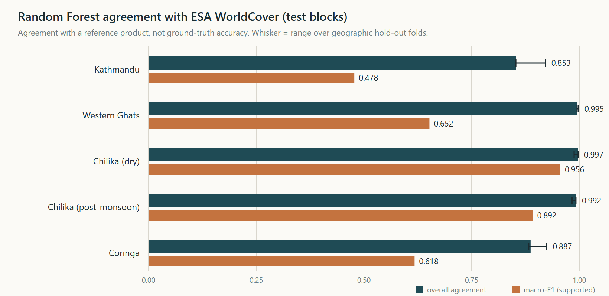
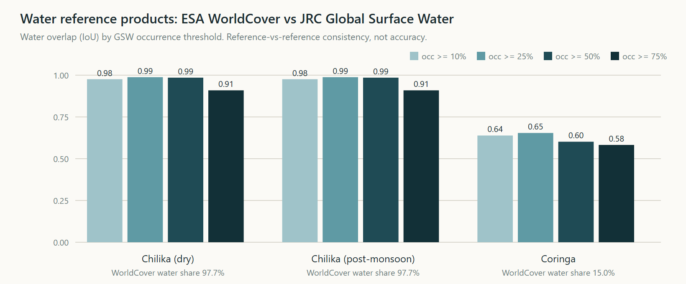

m5-release · all numbers are read from recorded artifacts in the repositorySatellite change demonstrations commonly pair a classifier score with an attractive map. That presentation hides three questions a reader needs answered: which observations were used, how sensitive the result is to analyst choices, and what the labels actually measure. HabitatShift was built to make those questions first-class. It treats every result as a candidate spectral signal between two dates, never as verified environmental change, and it records enough provenance to re-derive each number.
Imagery. Sentinel-2 MSI Level-2A surface reflectance from the Element 84 Earth Search STAC catalogue (anonymous, byte-range reads of cloud-optimised GeoTIFFs). Each study uses matched seasonal windows in two years (for example Chilika: February 2020 and February 2025; a post-monsoon pair is also processed), with typically three usable observations per period combined into median composites on one 10 m grid per study.
Reference labels (supervised experiments only). ESA WorldCover v200, 2021 epoch (CC-BY 4.0). Global Mangrove Watch v3.0 was inspected for Coringa; it disagrees with WorldCover inside the study area, so no mangrove classifier was trained. Dynamic World was excluded because agreeing with another model's output is model-to-model comparison. JRC Global Surface Water (occurrence v1.4, 1984–2021) is used as a second water reference in a cross-check (Section 5.4), not for training.
Context. Copernicus GLO-30 DEM is used for interpretation only, never as an input to the indices.
Windowed COG reads are verified per item for radiometric convention: scale and offset are resolved per asset, and an empirical physical-floor test detects stored values that do not match declared metadata (a measured inconsistency in 2025 Earth Search reprocessing is handled this way and documented). Scene Classification Layer masking excludes cloud, shadow and cirrus; per-pixel validity is the intersection of masks and finite reflectance. Area is projected UTM pixel area with a geodesic cross-check.
Spectral indices (NDVI, NDWI, MNDWI, NDBI and, for mountains, NDSI) are differenced between periods on the common-valid footprint. Symmetric inclusive thresholds (primary ±0.15) classify decrease and increase; sweeps over 0.05–0.25 show threshold dependence. Connected components (4-connectivity, minimum mapping unit 25 px) form a curated top-five-per-index-direction findings set with per-finding neighbour thresholds. Uncertainty is measured by spatial block bootstrap (Coringa), estimator families (single pairs, leave-one-out, composite mean/median) and MMU sensitivity.
A feasibility gate probed every reference source live: three studies passed, one was partial, two were blocked (both Himalayan studies). Passing studies use a Random Forest (300 trees, balanced subsample class weights, fixed seed) on reflectance bands and indices from a 2021 training epoch produced by the same audited chain. Evaluation uses contiguous 1 km block folds so no pixel crosses a fold, plus a three-fold geographic hold-out analysis. Classes with fewer than 50 test pixels are reported as "not reported". The trained model is then applied to the two study epochs; that cross-epoch application is a recorded assumption.
Separate audit scripts re-derive scene identity, dates, CRS, scale factors, masks, indices, composites, deltas, classes, areas and bootstrap draws from live source records and cached pixels without importing production code. A negation-aware disclosure audit scans every ML surface for unqualified accuracy or ground-truth language.
Studies, periods and thresholds were fixed before results were generated and stored in a registry. Scientific outputs from earlier milestones are frozen; later work is additive and references frozen records by SHA-256.
| Study | Periods | Recorded signal at |Δ| ≥ 0.15 |
|---|---|---|
| Chilika (dry) | 2020-02 → 2025-02 | NDWI 4.20 % lower / 22.34 % higher (146.09 / 777.89 ha of 3,373 ha): redistribution, not a loss signal |
| Chilika (post-monsoon) | 2020-11 → 2025-11 | NDWI 11.51 % lower / 3.60 % higher (388.10 / 121.70 ha) |
| Western Ghats | 2020-02 → 2025-02 | NDVI 0.14 % lower / 0.38 % higher (3.45 / 8.99 ha of 2,377 ha): essentially stable; no deforestation claim is possible |
| Kathmandu | 2020-03 → 2025-03 | NDBI-led candidate increase; built-up / bare-soil confusion guardrails recorded |
| Himalaya (Purepu 2025, Langtang 2026) | event windows | Partial evidence / optical-only limits shown in the product |

Agreement is high where the problem is nearly binary and the AOI is dominated by one class (Chilika 0.997 and 0.992). It is lower and less stable in Kathmandu (0.853; hold-out range 0.853–0.921), where the bare class is never predicted (F1 0.000 on 153 test pixels) and the water class has no test pixels and is gated. Western Ghats macro-F1 (0.652) is limited by a 4 % minority class. Coringa has a supervised experiment for vegetation, water and other, but none for mangroves.
Directions agree in four of five experiments (Kathmandu, Western Ghats, and both Chilika pairs); in Coringa the vegetation index net share falls (−2.96) while the predicted vegetation class share rises slightly (+0.84 pp). The disagreement is reported rather than resolved: the two quantities measure different things, and neither is treated as verification. Agreement in direction is consistency, never corroboration.

Overlap is 0.98–0.99 for Chilika at thresholds up to 50 % (WorldCover labels 97.7 % of the area water), dropping to 0.91 at 75 % because permanent-water filtering excludes seasonal lagoon area. For Coringa overlap is 0.58–0.65: the two products disagree about tidal and aquaculture water, which supports treating either as a reference rather than truth. Cohen's kappa is unstable when one class dominates, so counts and overlap are reported together. GSW summarises 1984–2021 while WorldCover is a 2021 snapshot.
Recorded 25 px findings are unaffected by MMU choice, but collections thin out at 50 px (Western Ghats NDVI decrease components 7 → 3 → 0 for MMU 10, 25, 50). Bootstrap block size from 10 to 30 px widens the Coringa NDVI interval (width 0.017 → 0.028), with the recorded 15 px design inside that range. Withholding feature groups changes agreement by at most about 0.01 (Kathmandu 0.853 → 0.848 with reflectance only), so features are largely redundant. Five uncertainty categories (measurement, observation selection, threshold, classification, reference label) are kept separate and are never combined into one score.
| Check | Result |
|---|---|
| Independent scientific audit, live source verification | 4,111 / 4,111 |
| Findings audit / M2 numerical audit / disclosure audits | 2,837 / 149 / 106 and 96 |
| ML reproducibility audit (bit-for-bit retraining) | 107 / 107 |
| Backend tests | 404 pass |
| Fresh-environment reproduction of one study | 9 / 9 GeoTIFFs byte-identical |
| Dependency advisories (pip-audit), before / after upgrade | 89 / 0 |
The audit found 30 stale output checksums in six manifests left by an earlier preview regeneration; they were corrected with backups and a root-cause fix with a regression test.
Code, manifests, sealed findings and audit scripts are in the repository. scripts/reproduce_m5_fresh.py regenerates a study from source data in a clean environment and checks SHA-256 equality. scripts/run_m5_gsw_crosscheck.py and scripts/build_portfolio_figures.py regenerate Section 5.4 and the figures. Rasters (about 1 GB) are not stored in git.
Contains modified Copernicus Sentinel data, processed by ESA; L2A products distributed by the Element 84 Earth Search STAC catalogue (AWS Open Data). WorldCover © ESA WorldCover project 2022 (CC-BY 4.0). JRC GSW © European Commission JRC (CC-BY 4.0).